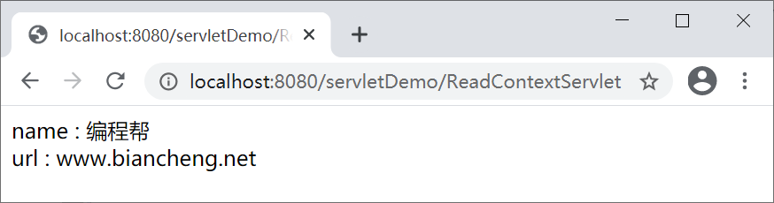
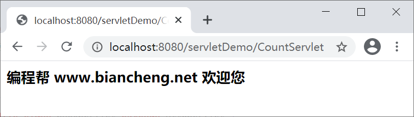
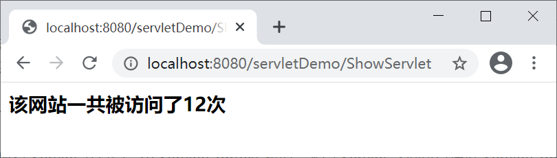
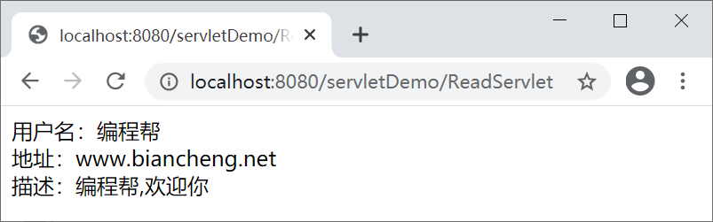

ServletContext接口详解
Servlet 容器启动时，会为每个 Web 应用（webapps 下的每个目录都是一个 Web 应用）创建一个唯一的 ServletContext 对象，该对象一般被称为“Servlet 上下文”。
ServletContext 对象的生命周期从 Servlet 容器启动时开始，到容器关闭或应用被卸载时结束。
Web 应用中的所有 Servlet 共享同一个 ServletContext 对象，不同 Servlet 之间可以通过 ServletContext 对象实现数据通讯，因此 ServletContext 对象也被称为 Context 域对象。
注意：以上最后两种方法了解即可，后面我们会详细讲解。
ServletContext 的应用主要有以下 3 个：
1) 设置上下文初始化参数
2) 调用接口中方法获取初始化参数
与 Servlet 的初始化参数不同，应用中的所有 Servlet 都共享同一个上下文初始化参数。在 Web 应用的整个生命周期中，上下文初始化参数会一直存在，并且可以随时被任意一个 Servlet 访问。
在 web.xml 文件中配置上下文初始化参数，代码如下所示。
下表列举了 ServletContext 接口中用于获取上下文初始化参数的相关方法。
启动 Tomcat 服务器，在地址栏输入“http://localhost:8080/servletDemo/ReadContextServlet”，访问 ReadContextServlet，结果如下图。
在 servletDemo 的 net.biancheng.www 包下，创建一个名称为 CountServlet 的 Servlet 类，代码如下。
然后再创建一个名称为 ShowServlet 的 Servlet 类，代码如下。
重启 Tomcat 浏览器，在地址栏输入“http://localhost:8080/servletDemo/CountServlet”，多次访问 CountServlet 次，结果如下图。
然后再输入“http://localhost:8080/servletDemo/ShowServlet”，访问 ShowServlet，结果如下图。
注：上表中参数 path 代表资源文件的虚拟路径，它以正斜线
在 servletDemo 的 src 目录中，创建一个名称为 db.properties 的文件，文件中输入如下所示的配置信息。
在 net.biancheng.www 包中，创建一个名称为 ReadServlet 的 Servlet 类，代码如下所示。
启动 Tomcat 服务器，在地址栏中输入“http://localhost:8080/servletDemo/ReadServlet”，访问 ReadServlet，结果如下图。
ServletContext 对象的生命周期从 Servlet 容器启动时开始，到容器关闭或应用被卸载时结束。
Web 应用中的所有 Servlet 共享同一个 ServletContext 对象，不同 Servlet 之间可以通过 ServletContext 对象实现数据通讯，因此 ServletContext 对象也被称为 Context 域对象。
域对象是服务器在内存上创建的存储空间，该空间用于不同动态资源（例如 Servlet、JSP）之间传递与共享数据。
获得 ServletContext 对象
获得 ServletContext 对象有以下 4 种方式：1. 通过 GenericServlet 提供的 getServletContext() 方法
//通过 GenericServlet的getServletContext方法获取ServletContext对象 ServletContext servletContext = this.getServletContext();
2. 通过 ServletConfig 提供的 getServletContext() 方法
//通过 ServletConfig的 getServletContext方法获取ServletContext对象 ServletContext servletContext = this.getServletConfig().getServletContext();
3. 通过 HttpSession 提供的 getServletContext() 方法
//通过 HttpSession的 getServletContext方法获取ServletContext对象 ServletContext servletContext = req.getSession().getServletContext();
4. 通过 HttpServletRequest 提供的 getServletContext() 方法
//通过 HttpServletRequest的 getServletContext方法获取ServletContext对象 ServletContext servletContext = req.getServletContext();
注意：以上最后两种方法了解即可，后面我们会详细讲解。
ServletContext 的应用
javax.servlet 包提供了一个 ServletContext 接口，该接口定义了一组方法，Servlet 可以使用这些方法与容器进行通信。ServletContext 的应用主要有以下 3 个：
- 获取上下文初始化参数
- 实现 Servlet 之间的数据通讯
- 读取 Web 应用下的资源文件
1. 获取上下文初始化参数
使用 ServletContext 对象获取 Web 应用的上下文初始化参数，分为 2 步：1) 设置上下文初始化参数
2) 调用接口中方法获取初始化参数
1) 设置上下文初始化参数
通过 web.xml 中的 <context-param> 元素可以为 Web 应用设置一些全局的初始化参数，这些参数被称为上下文初始化参数。与 Servlet 的初始化参数不同，应用中的所有 Servlet 都共享同一个上下文初始化参数。在 Web 应用的整个生命周期中，上下文初始化参数会一直存在，并且可以随时被任意一个 Servlet 访问。
在 web.xml 文件中配置上下文初始化参数，代码如下所示。
<?xml version="1.0" encoding="UTF-8"?>
<web-app xmlns="http://xmlns.jcp.org/xml/ns/javaee"
xmlns:xsi="http://www.w3.org/2001/XMLSchema-instance"
xsi:schemaLocation="http://xmlns.jcp.org/xml/ns/javaee
http://xmlns.jcp.org/xml/ns/javaee/web-app_4_0.xsd"
version="4.0" metadata-complete="false">
<!--设置全局初始化参数 -->
<context-param>
<param-name>name</param-name>
<param-value>编程帮</param-value>
</context-param>
<context-param>
<param-name>url</param-name>
<param-value>www.biancheng.net</param-value>
</context-param>
</web-app>
对以上标签说明如下：
- <context-param> 元素用来声明上下文初始化参数，必须在根元素 <web-app> 内使用。
- <param-name> 子元素表示参数名，参数名在整个 Web 应用中必须是唯一的。
- <param-value> 子元素表示参数值。
2) 调用接口中方法获取初始化参数
Servlet 容器启动时，会为容器内每个 Web 应用创建一个 ServletContext 对象，并将 <context-param> 元素中的上下文初始化参数以键值对的形式存入该对象中，因此我们可以通过 ServletContext 的相关方法获取到这些初始化参数。下表列举了 ServletContext 接口中用于获取上下文初始化参数的相关方法。
| 返回值类型 | 方法 | 描述 |
|---|---|---|
| String | getInitParameter(String name) | 根据初始化参数名 name，返回对应的初始化参数值。 |
| Enumeration<String> | getInitParameterNames() | 返回 Web 应用所有上下文初始化参数名的枚举集合，如果该 Web 应用没有上下文初始化参数，则返回一个空的枚举集合。 |
例 1
以 servletDemo 为例，在 net.biancheng.www 包下创建一个名称为 ReadContextServlet 的类，代码如下。
package net.biancheng.www;
import java.io.IOException;
import java.io.PrintWriter;
import java.util.Enumeration;
import javax.servlet.ServletContext;
import javax.servlet.ServletException;
import javax.servlet.annotation.WebServlet;
import javax.servlet.http.HttpServlet;
import javax.servlet.http.HttpServletRequest;
import javax.servlet.http.HttpServletResponse;
@WebServlet("/ReadContextServlet")
public class ReadContextServlet extends HttpServlet {
private static final long serialVersionUID = 1L;
protected void doGet(HttpServletRequest request, HttpServletResponse response)
throws ServletException, IOException {
response.setContentType("text/html;charset=UTF-8");
PrintWriter writer = response.getWriter();
// 调用httpServlet父类GenericServlet的getServletContext方法获取ServletContext对象
ServletContext context = super.getServletContext();
// 返回 context 上下文初始化参数的名称
Enumeration<String> initParameterNames = context.getInitParameterNames();
while (initParameterNames.hasMoreElements()) {
// 获取初始化参数名称
String initParamName = initParameterNames.nextElement();
// 获取相应的初始参数的值
String initParamValue = context.getInitParameter(initParamName);
// 向页面输出
writer.write(initParamName + " : " + initParamValue + "<br/>");
}
// 关闭流
writer.close();
}
protected void doPost(HttpServletRequest request, HttpServletResponse response)
throws ServletException, IOException {
doGet(request, response);
}
}
启动 Tomcat 服务器，在地址栏输入“http://localhost:8080/servletDemo/ReadContextServlet”，访问 ReadContextServlet，结果如下图。

2. 实现数据通讯
在 Servlet 中，调用 ServletContext 接口的 setAttribute() 方法可以创建一些属性，这些属性被存放在 ServletContext 对象中。应用中所有 Servlet 都可以对这些属性进行访问和操作，通过它们可以实现应用内不同 Servlet 之间的数据通讯。数据通讯的相关方法
下表列举了 ServletContext 接口实现数据通讯的相关方法。| 返回值类型 | 方法 | 描述 |
|---|---|---|
| void | setAttribute(String name, Object object) |
把一个 Java 对象与一个属性名绑定，并将它作为一个属性存放到 ServletContext 中。 参数 name 为属性名，参数 object 为属性值。 |
| void | removeAttribute(String name) | 从 ServletContext 中移除属性名为 name 的属性。 |
| Object | getAttribute(String name) | 根据指定的属性名 name，返回 ServletContext 中对应的属性值。 |
ServletContext 属性与上下文初始化参数对比
虽然 ServletContext 的属性与上下文初始化参数都是存放在 ServletContext 对象中，但它们是不同的。| 不同点 | ServletContext 的属性 | 上下文初始化参数 |
|---|---|---|
| 创建方式 | ServletContext 的属性通过调用 ServletContext 接口的 setAttribute() 方法创建 | 上下文初始化参数通过 web.xml 使用 <context-param> 元素配置 |
| 可进行的操作 | ServletContext 的属性可以通过 ServletContext 接口的方法进行读取、新增、修改、移除等操作 | 上下文初始化参数在容器启动后只能被读取，不能进行新增、修改和移除操作 |
| 生命周期 | ServletContext 中属性的生命周期从创建开始，到该属性被移除（remove）或者容器关闭结束 | 上下文初始化参数的生命周期，从容器启动开始，到 Web 应用被卸载或容器关闭结束 |
| 作用 | 使用 ServletContext 中的属性可以实现 Servlet 之间的数据通讯 | 使用上下文初始化参数无法实现数据通讯 |
例 2
我们通过编写一个统计页面访问量的案例，来演示如何通过 ServletContext 对象实现数据通讯。在 servletDemo 的 net.biancheng.www 包下，创建一个名称为 CountServlet 的 Servlet 类，代码如下。
package net.biancheng.www;
import java.io.IOException;
import javax.servlet.ServletContext;
import javax.servlet.ServletException;
import javax.servlet.annotation.WebServlet;
import javax.servlet.http.HttpServlet;
import javax.servlet.http.HttpServletRequest;
import javax.servlet.http.HttpServletResponse;
/**
*
* @author 编程帮 www.biancheng.net
* 使用ServletContext 统计访问次数
*
*/
@WebServlet("/CountServlet")
public class CountServlet extends HttpServlet {
private static final long serialVersionUID = 1L;
public void init() throws ServletException {
// 获取ServletContext对象
ServletContext context = getServletContext();
// 初始化时，向ServletContext中设置count属性，初始值为0
context.setAttribute("count", 0);
}
protected void doGet(HttpServletRequest request, HttpServletResponse response)
throws ServletException, IOException {
// 调用httpServlet父类GenericServlet的getServletContext方法获取ServletContext对象
ServletContext context = super.getServletContext();
// 获取count的值，自增
Integer count = (Integer) context.getAttribute("count");
// 存入到域对象中
context.setAttribute("count", ++count);
// 向页面输出内容
response.setContentType("text/html;charset=UTF-8");
response.getWriter().write("<h3>编程帮 www.biancheng.net 欢迎您</h3>");
}
protected void doPost(HttpServletRequest request, HttpServletResponse response)
throws ServletException, IOException {
doGet(request, response);
}
}
然后再创建一个名称为 ShowServlet 的 Servlet 类，代码如下。
package net.biancheng.www;
import java.io.IOException;
import javax.servlet.ServletException;
import javax.servlet.annotation.WebServlet;
import javax.servlet.http.HttpServlet;
import javax.servlet.http.HttpServletRequest;
import javax.servlet.http.HttpServletResponse;
/**
*
* @author 编程帮 www.biancheng.net
* 使用ServletContext展示网站的访问次数
*
*/
@WebServlet("/ShowServlet")
public class ShowServlet extends HttpServlet {
private static final long serialVersionUID = 1L;
protected void doGet(HttpServletRequest request, HttpServletResponse response)
throws ServletException, IOException {
// 获取ServletContext中存放的count属性（即页面的访问次数）
Integer count = (Integer) getServletContext().getAttribute("count");
// 向页面输出
response.setContentType("text/html;charset=UTF-8");
// 若CountServlet已被访问
if (count != null) {
response.getWriter().write("<h3>该网站一共被访问了" + count + "次</h3>");
} else {
// 若CountServlet未被访问，提示先访问CountServlet
response.getWriter().write("<h3>请先访问 CountServlet</h3>");
}
}
protected void doPost(HttpServletRequest request, HttpServletResponse response)
throws ServletException, IOException {
doGet(request, response);
}
}
重启 Tomcat 浏览器，在地址栏输入“http://localhost:8080/servletDemo/CountServlet”，多次访问 CountServlet 次，结果如下图。

然后再输入“http://localhost:8080/servletDemo/ShowServlet”，访问 ShowServlet，结果如下图。

3. 读取 Web 应用下的资源文件
在实际开发中，有时会需要读取 Web 应用中的一些资源文件，如配置文件和日志文件等。为此，ServletContext 接口定义了一些读取 Web 资源的方法 ，如下表。| 返回值类型 | 方法 | 方法描述 |
|---|---|---|
| Set | getResourcePaths(String path) | 返回一个 Set 集合，该集合中包含资源目录中的子目录和文件的名称。 |
| String | getRealPath(String path) | 返回资源文件的真实路径（文件的绝对路径）。 |
| URL | getResource(String path) | 返回映射到资源文件的 URL 对象。 |
| InputStream | getResourceAsStream(String path) | 返回映射到资源文件的 InputStream 输入流对象。 |
注：上表中参数 path 代表资源文件的虚拟路径，它以正斜线
/开始，/ 表示当前 Web 应用的根目录。
例 3
下面我们通过一个例子演示如何使用 ServletContext 对象读取资源文件。在 servletDemo 的 src 目录中，创建一个名称为 db.properties 的文件，文件中输入如下所示的配置信息。
name=编程帮 url=www.biancheng.net desc=编程帮,欢迎你
在 net.biancheng.www 包中，创建一个名称为 ReadServlet 的 Servlet 类，代码如下所示。
package net.biancheng.www;
import java.io.IOException;
import java.io.InputStream;
import java.io.PrintWriter;
import java.util.Properties;
import javax.servlet.ServletException;
import javax.servlet.annotation.WebServlet;
import javax.servlet.http.HttpServlet;
import javax.servlet.http.HttpServletRequest;
import javax.servlet.http.HttpServletResponse;
/**
*
* @author 编程帮 www.biancheng.net
* 使用ServletContext肚读取资源文件
*
*/
@WebServlet("/ReadServlet")
public class ReadServlet extends HttpServlet {
private static final long serialVersionUID = 1L;
protected void doGet(HttpServletRequest request, HttpServletResponse response)
throws ServletException, IOException {
response.setContentType("text/html;charset=UTF-8");
PrintWriter writer = response.getWriter();
// 获取相对路径中的输入流对象
InputStream ins = getServletContext().getResourceAsStream("/WEB-INF/classes/db.properties");
// 获取输入流
Properties pro = new Properties();
// 加载
pro.load(ins);
// 获取文件中的内容
String name = pro.getProperty("name");
String url = pro.getProperty("url");
String desc = pro.getProperty("desc");
writer.write("用户名：" + name + "<br/>" + "地址：" + url + "<br/>" + "描述：" + desc + "<br/>");
}
protected void doPost(HttpServletRequest request, HttpServletResponse response)
throws ServletException, IOException {
doGet(request, response);
}
}
启动 Tomcat 服务器，在地址栏中输入“http://localhost:8080/servletDemo/ReadServlet”，访问 ReadServlet，结果如下图。

关注公众号「站长严长生」，在手机上阅读所有教程，随时随地都能学习。内含一款搜索神器，免费下载全网书籍和视频。

微信扫码关注公众号